Engineering Accessible
Haptic Feedback.
The VibraCoach project started in Οπεν Hackathon for Accessibility 2026 as a vision to help deaf and hard-of-hearing athletes compete in sports without the need of visual or auditory cues. Powered by the ESP32-C3 and connected via BLE, it delivers distinct (and customizable) physical cues for real-time coaching.
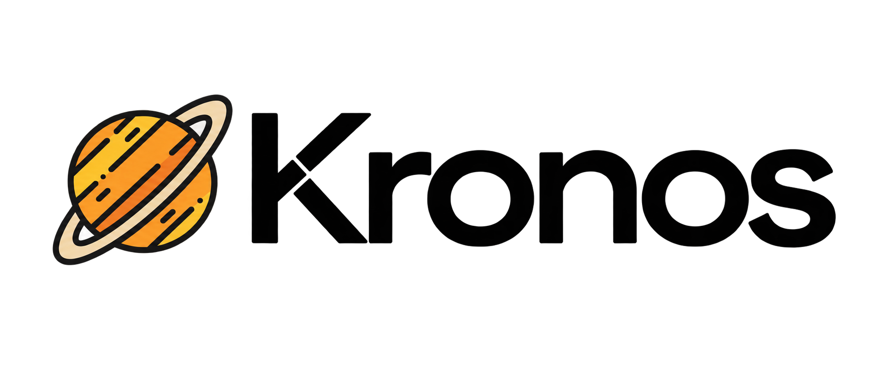
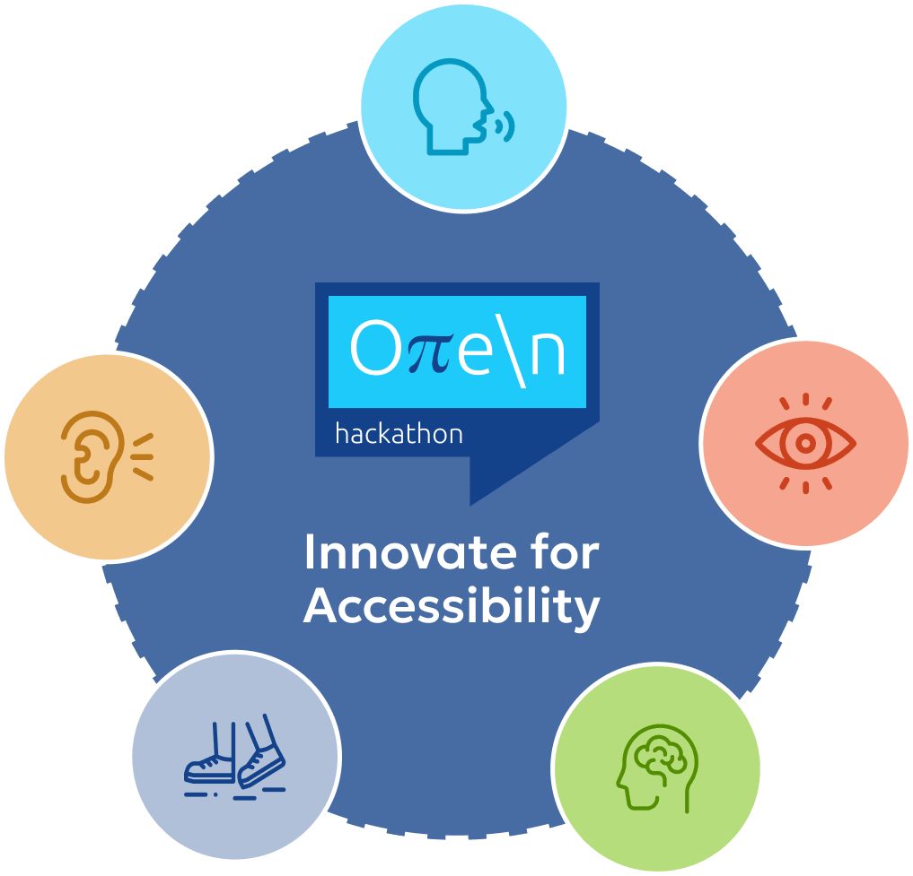
Οπεν Hackathon 2026
For Accessibility
How it
started
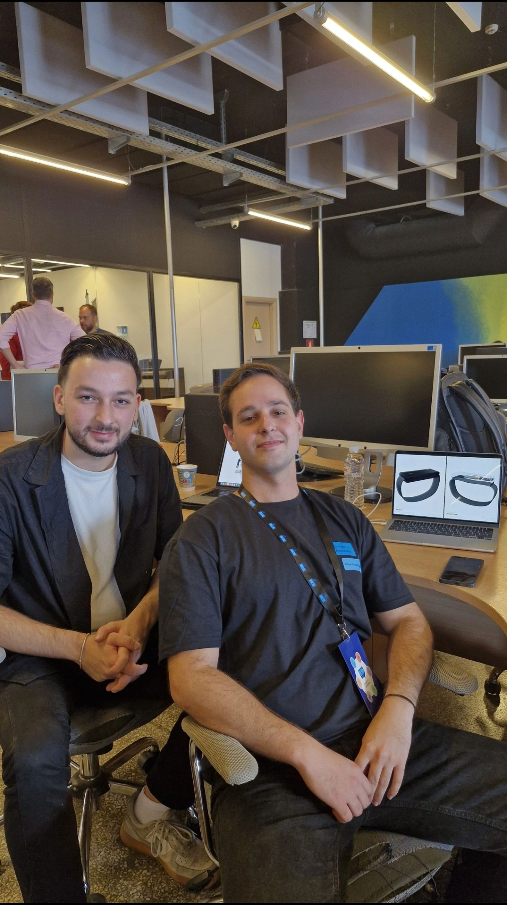
Theodoris Iliadis (left) & Aggelos Ladas (right)
My name is Aggelos Ladas and this is how the VibraCoach project came to life. The idea was born during the Οπεν Hackathon 2026 for Accessibility. Under the umbrella of my startup initiative Kronos, I partnered with Theodoris Iliadis for the weekend to tackle a unique challenge in the accessibility space.
The problem we wanted to solve
Deaf and hard-of-hearing individuals often face challenges in receiving real-time feedback during physical activities. Traditional visual or auditory cues can be limiting, especially in dynamic environments.
We envisioned a wearable device that could provide distinct haptic feedback, allowing users to receive immediate guidance without relying on sight or sound. This way, deaf basketball players, for instance, could feel the rhythm of the game and receive coaching cues through vibrations, enhancing their performance and engagement.
We did this with a simple architecture: a small wearable device that communicates with a mobile app via Bluetooth Low Energy (BLE). The app features a total of 8 customizable vibration patterns, each corresponding to specific coaching cues. The app is still in its early stages, but the prototype demonstrates the potential of haptic feedback in sports coaching for the deaf and hard-of-hearing community.
The 3-Day Prototype
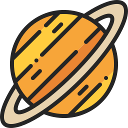
DAY 1
First Hardware & Mobile Sync
The first day was a big challenge. There was a lot of research to do to get familiarized with the core concept of our problem. One thing was certain, the solution is a wearable device. How do we help deaf athletes get real-time feedback without breaking the rules of Basketball? Can athletes even wear wearables during a game? How do we start? Fortunately, me and Theodoris had a brainstorming session and we came up with a simple architecture: a small wearable device that communicates with a mobile app. This is were we tackled our real first challenge, hardware. Thodoris and I both come from a software engineering background, so the hardware part was a challenge on its own.
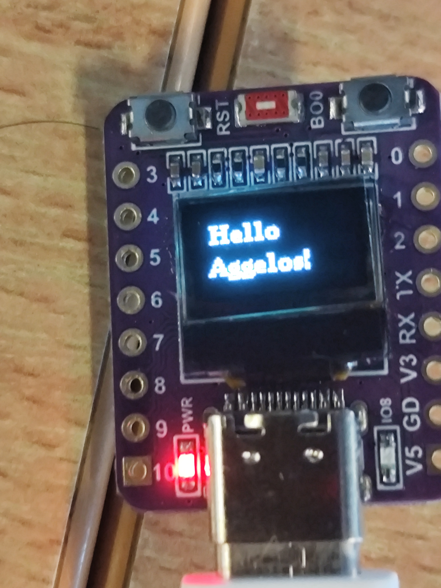
ESP32-C3 Board and USB connection setup.
DAY 2
Actuation & Non-Blocking Patterns
With communication established, the focus shifted to haptics. We wired up the vibration motor modules. The challenge here was writing non-blocking event handling so the ESP32 could parse incoming BLE commands while simultaneously triggering distinct PWM vibration patterns without freezing the loop.
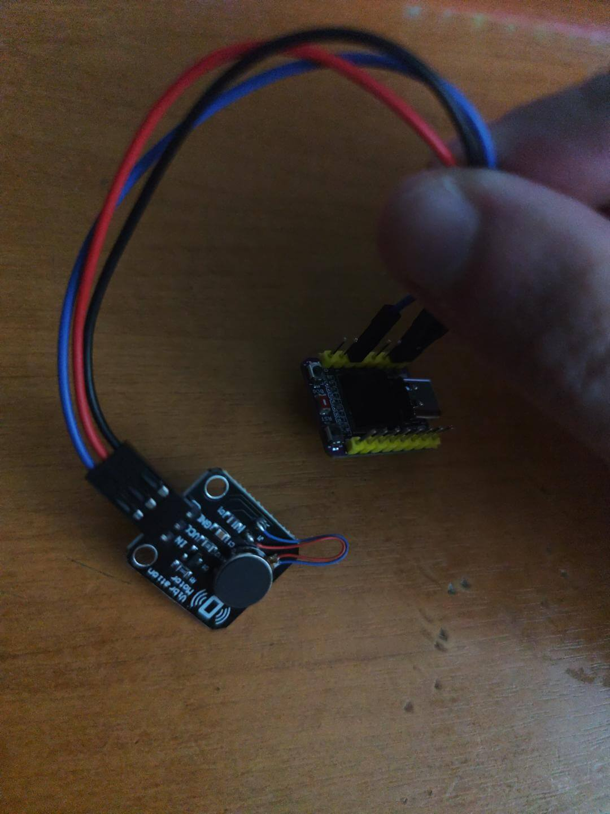
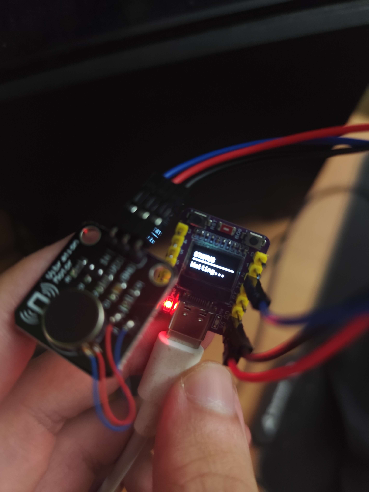
DAY 3
Enclosure & The Final Pitch
A wearable needs to be worn. On the final day, we moved from breadboards to a compact form factor, 3D printing a custom box to house the battery, board, and motor safely. We integrated everything just in time for the presentation.
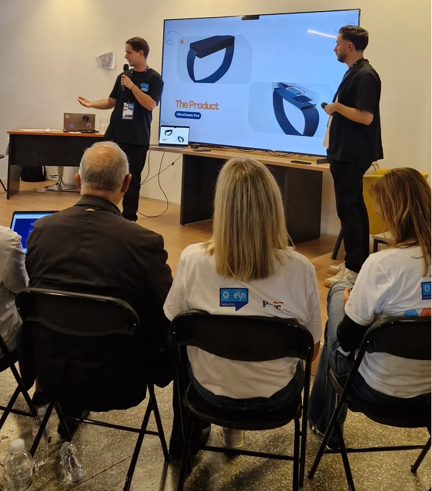
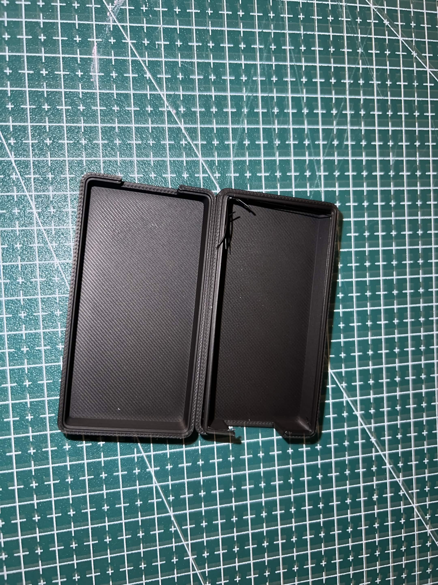
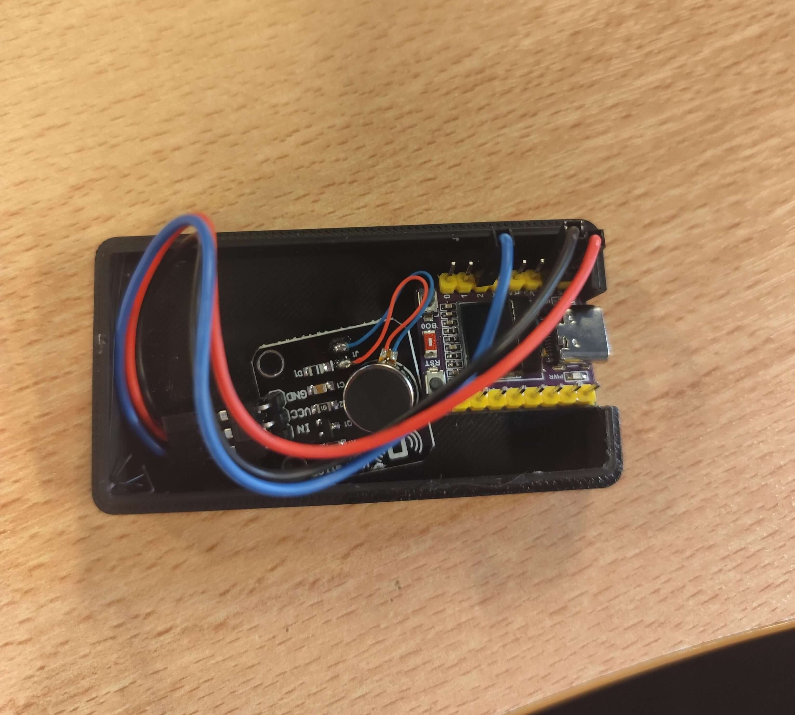
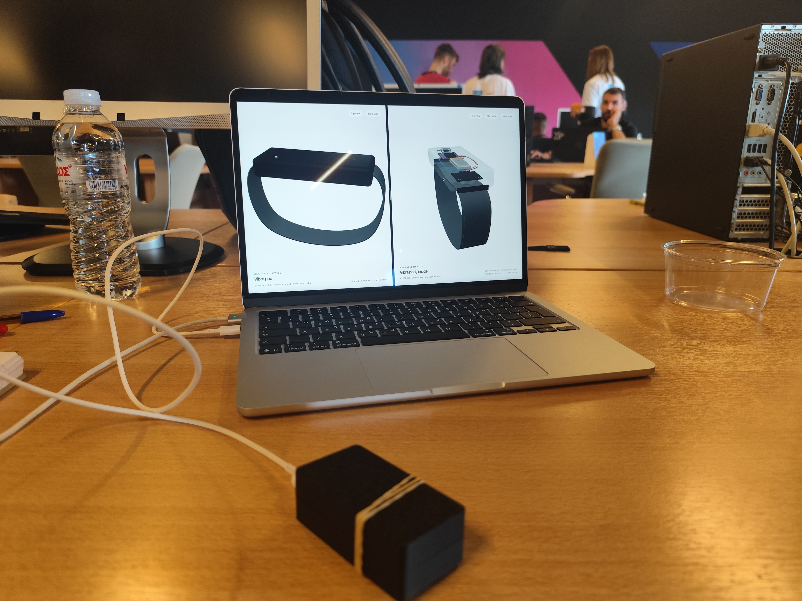
Explore the Hardware, This is how we want the final product will look.
Interact with the digital version, use the controls to navigate around the model.